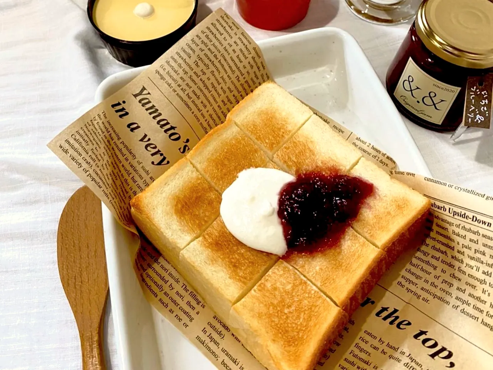
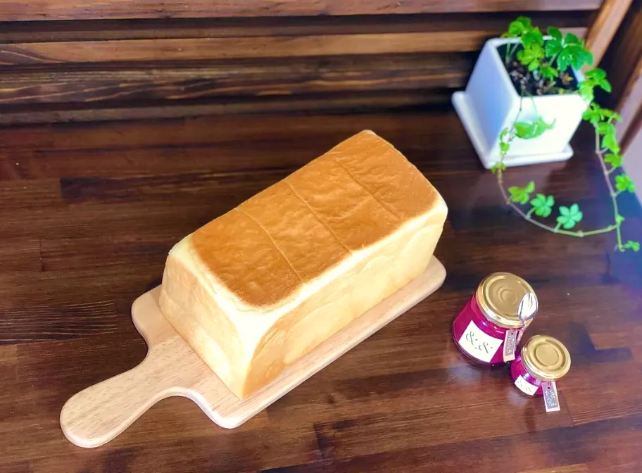

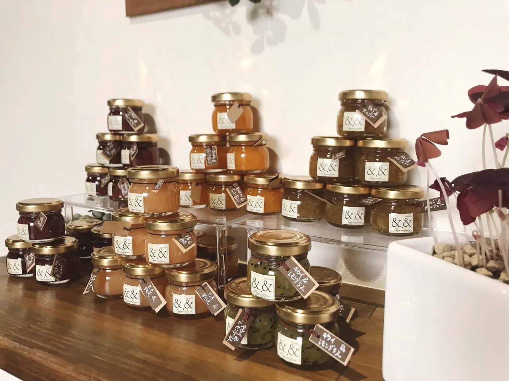

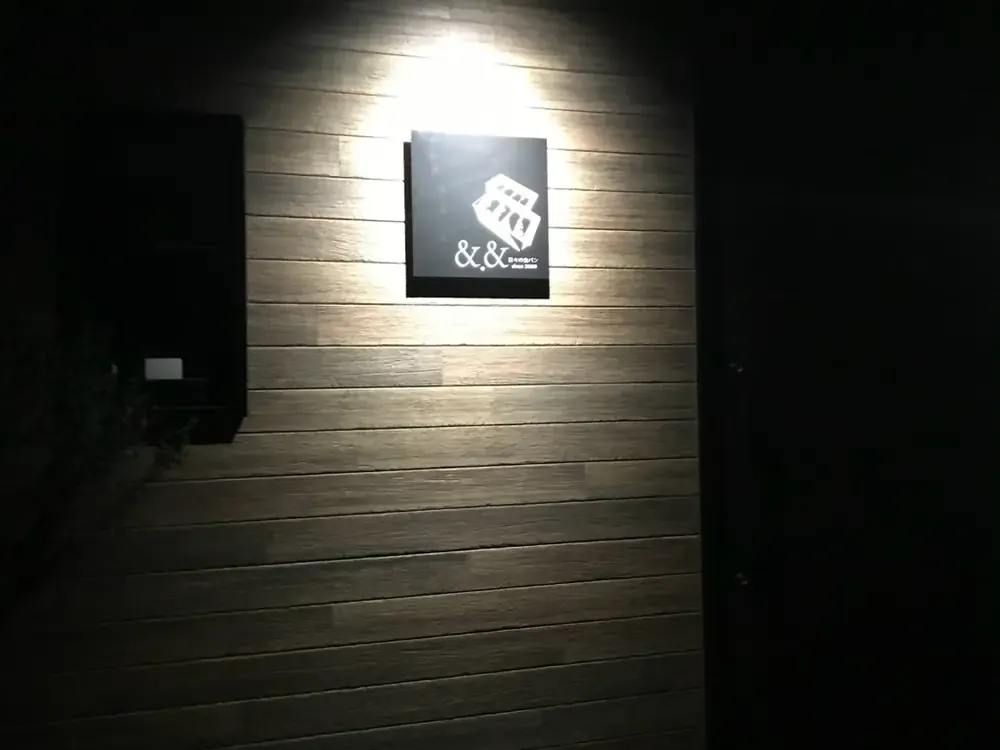

MIMATA, MIYAZAKI
日々の食パンと、果実の自家製ジャム。
三股町の、
テイクアウトだけの
小さな食パン屋です。
- 営業日
- 木・金・土・日
- 営業時間
- 11:00〜15:00（売り切れ次第終了）
Concept
民家の一角の、
ひとりで焼く店
&.& は、2020年に始めた食パン屋です。民家の一角にあるお店で、つくり手がひとりで焼いています。
並ぶのは、無添加の食パンと、季節の果実の自家製ジャム、その日の菓子パン。
Shokupan
無添加の食パン

Original jam
季節の果実の、
自家製ジャム
- いちごのジャムStrawberry
- ブルーベリーのジャムBlueberry
- きんかんのジャムKinkan
- 日向夏のジャムHyuganatsu
- みかんのジャムMikan
ジャムは、季節によって並ぶものが変わります。ない日もあります。
いちご＆ブルーベリーや、日向夏×みかんのように、果実を合わせたジャムもあります。

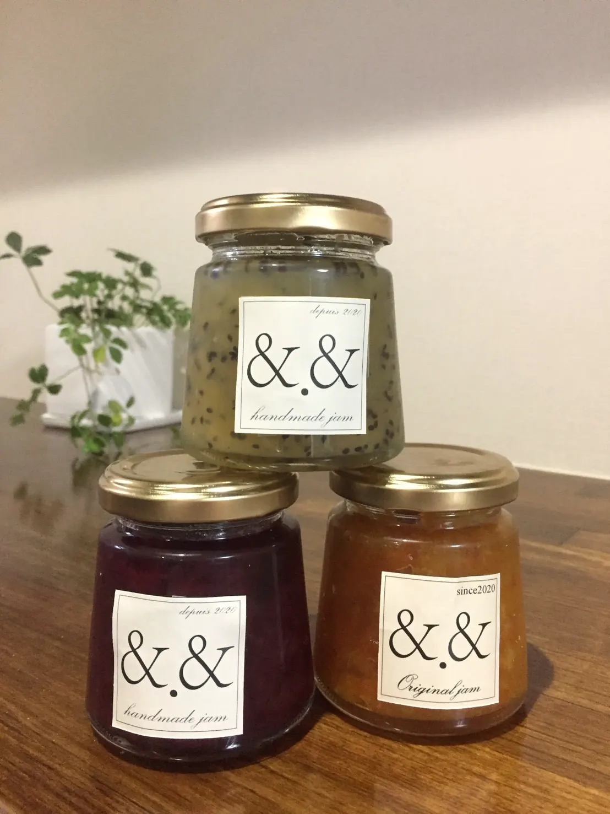
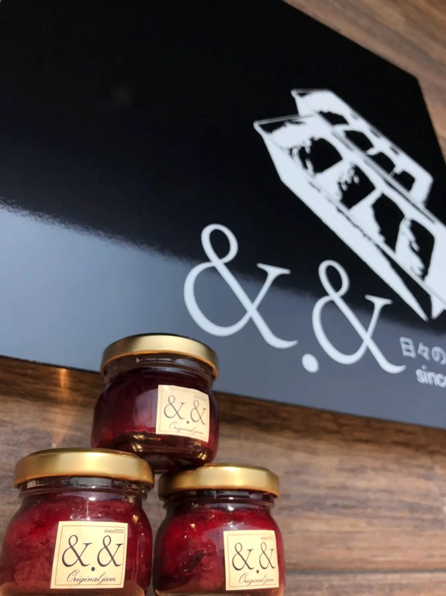


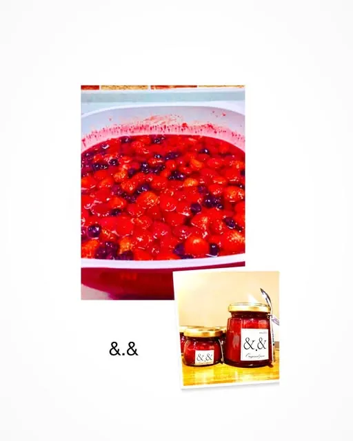
Today’s bake
その日の菓子パン
焼くものは、その日の気分で決めています。
並ぶものは、日によって変わります。
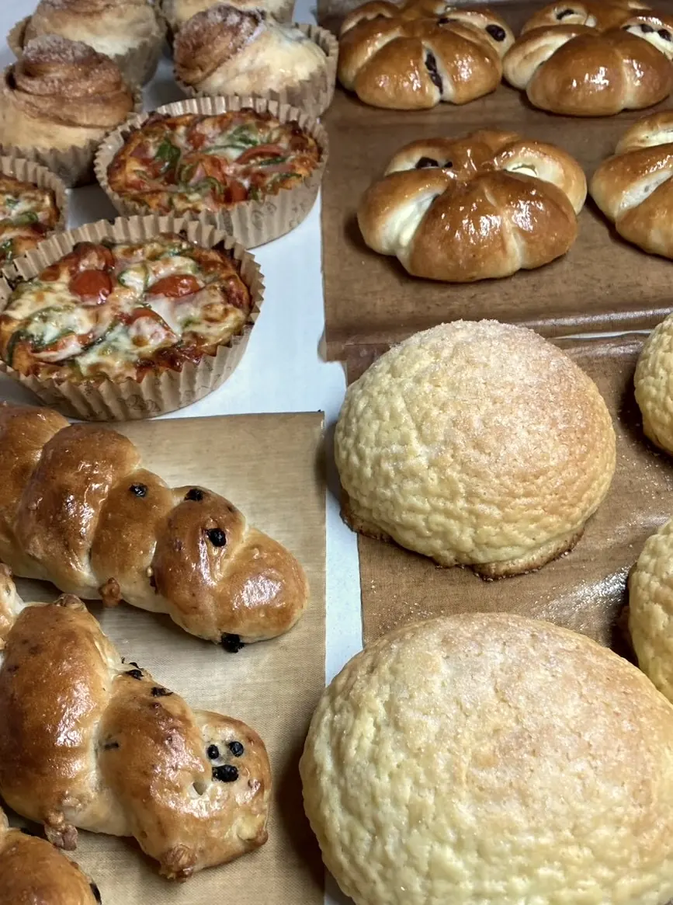
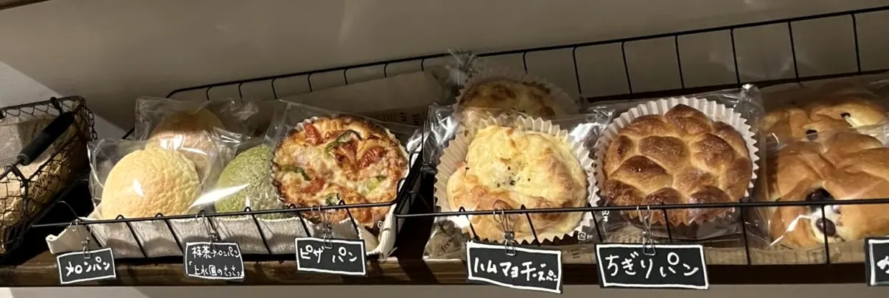
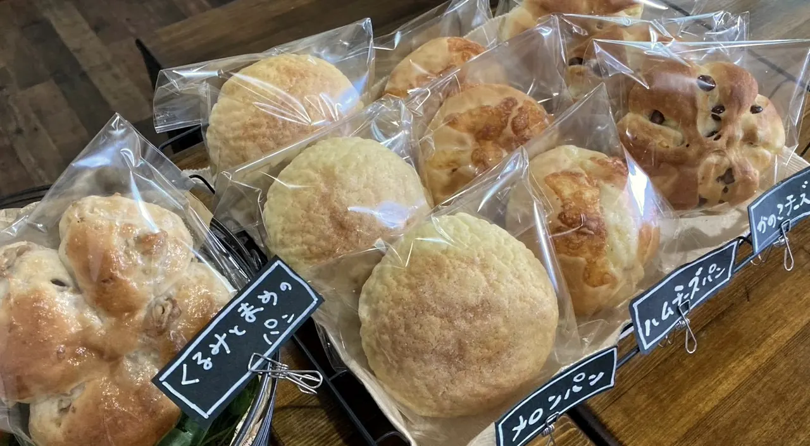
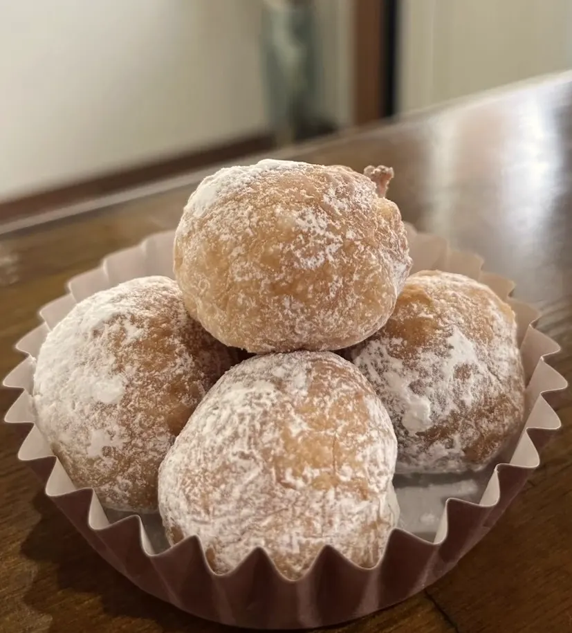
Home-grown fruit
我が家の果物
我が家で育てた果物も並びます。
シャインマスカット・キウイ・ブルーベリー。
採れた時期だけです。
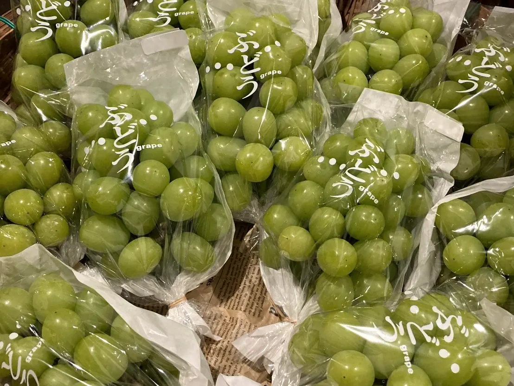
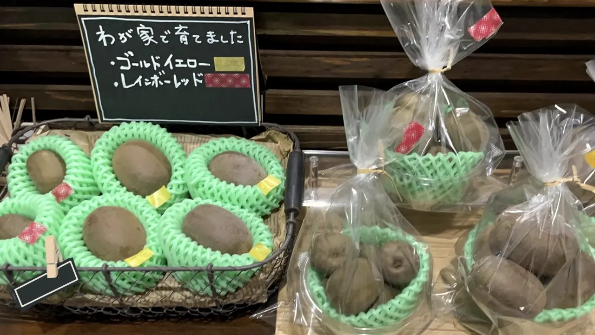

日々の記録


Reservation
ご予約は、お電話で
受付 木・金・土・日 9:00〜15:00
- ひとりで作業しているため、パンを焼いている間は電話に出られないことがあります。少し時間をおいて、おかけ直しください。
- 食パンのご予約は、1日あわせて36斤（18本）までです。 確認中
Shop information
店舗のご案内
- 店名
- &.&～日々の食パン～（アンドアンド ひびのしょくぱん）
- 住所
- 〒889-1901 宮崎県北諸県郡三股町樺山1273-1
- 営業日
- 木・金・土・日（第5日曜日はお休み）
- 営業時間
- 11:00〜15:00（売り切れ次第終了）
- 定休日
- 月・火・水（ほかに不定休あり）
- 駐車場
- あり（店の前のスペース）
お休みについて
&.& は個人で営んでいるため、木・金・土・日の営業日でも、不定期にお休みをいただくことがあります。
お越しの前に、お電話でお確かめください。